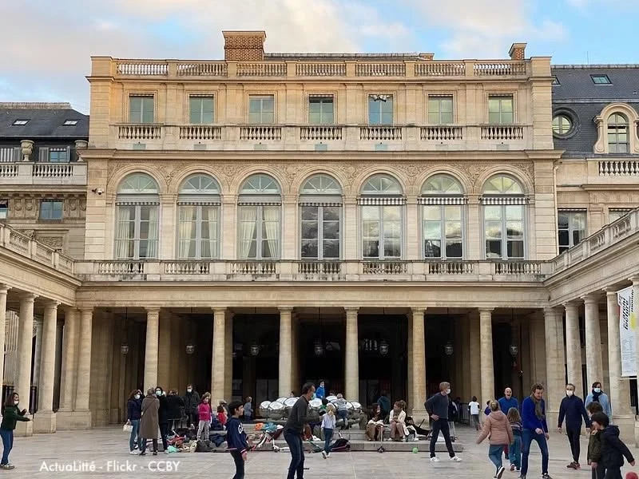

Publication relayée par le PCF 79
Coopération culturelle avec le Niger, le Mali et le Burkina Faso. Le communiqué des députés communistes
Date de mise à jour indiquée par Facebook · 21 septembre 2023
Texte de la publication · Les députés communistes
[communiqué] *Interdiction de coopérer avec les artistes du Niger, du Mali et du Burkina Faso par le Gouvernement français : faire taire la culture, c’est faire parler les armes !*
Aujourd’hui, nous avons appris que les directions régionales artistiques et culturelles, sur instruction du Quai d’Orsay, exigeaient la fin de toute coopération des centres dramatiques et chorégraphiques nationaux et scènes nationales, avec les artistes du Mali, du Niger et du Burkina Faso.
Précisément, aucun artiste ne pourra rentrer sur le territoire, les spectacles concernés sont suspendus, les coopérations humaines et financières arrêtées.
Faire taire la culture, condamner au silence les artistes, comme s’ils étaient responsables des conflits internes ou entre pays est une erreur grave. La coopération entre les peuples, le dialogue des cultures et de la culture sont indispensables pour construire la paix. La décision prise par le Gouvernement français est contraire à nos principes fondamentaux.
Le secteur de la culture en France s’indigne d’ailleurs de cette décision qui représente une attaque directe vis-à-vis d’artistes qui, bien souvent, souffrent déjà dans leur pays pour exercer. Nous partageons les mots du Syndicat national des entreprises artistiques et culturelles qualifiant cette décision de « comminatoire ».
L’instrumentalisation des artistes et de la culture et un précédent grave.
Les députés du groupe GDR demandent au Gouvernement de revenir sur cette mesure brutale et de réunir les acteurs du secteur de la culture afin de trouver les voies et moyens pour contribuer à construire la paix plutôt que d’alimenter le conflit.

Sources
Les députés communistes · publication relayée par le PCF 79 · bibliothèque Facebook · AR-0002-FB-01580
À lire aussi · Pass culture, non à la punition collective ! · Le lien d’origine